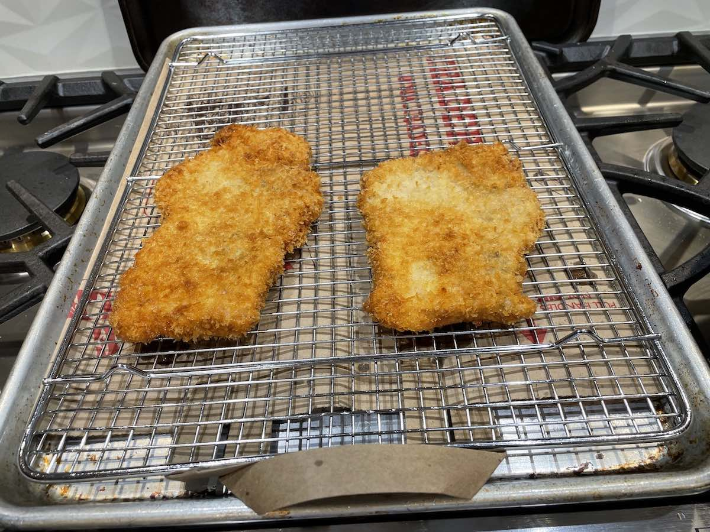
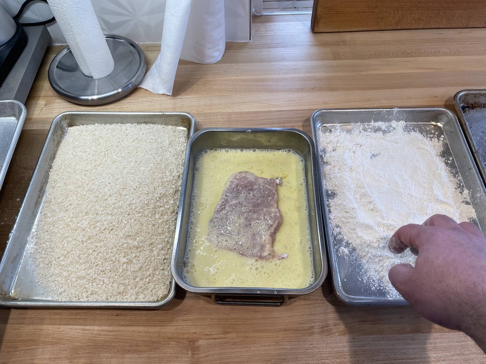
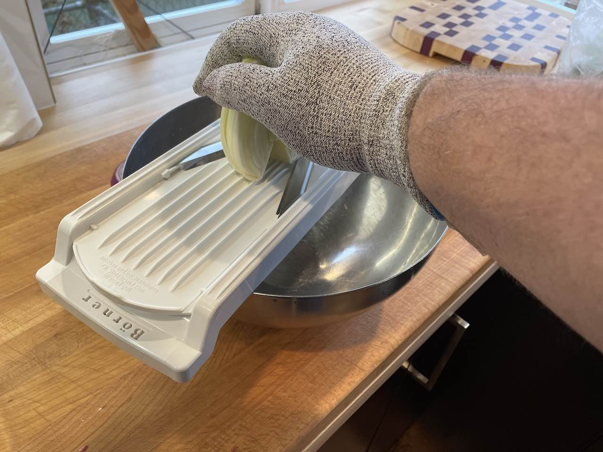

Tonkatzu (pork cutlets) & a Fennel, Red Onion & Parsley salad
This is one of my kids favorite meals: thin pounded pork loin, breaded and fried, with rice. They’re not a huge fan of the salad, but you need something to cut through the fat of the katzu and the sweetness of the katzu sauce.

I usually buy an intact loin rather than the boneless chops since it’s cheaper, keeps longer and it’s really pretty easy to divide the loin into four equal pieces, and then butterfly them (or just divide into eight pieces), and then pound them thin. To make that part easier, sprinkle a little water on top of the meat, cover it with plastic wrap, and then sprinkle the smallest amount of water on top of the plastic. Take your meat pounder (lol) and give it some nice even not-too-hard thwacks when you come down on it, slide the pounder outward to help spread the meat out (lol). This is where the water helps since it makes things a little more slippery. If you need a meat pounder Cook’s Illustrated says the “Norpro Grip EZ Pounder” is the one for you.
Then it’s time to season and bread them. I usually season the meat rather than the breading since it uses way less season and guarantees more even seasoning, but it’s a standard three-way (lol) breading station: flour, egg & milk, panko bread crumbs. Make sure you get the excess bits off in each step and for chrissakes use different hands for wet and dry or you’ll get club hand and frankly that’s your problem to deal with.

I usually refridgerate the cutlets for an hour or so before frying them in 360º-375º canola/peanut/safflower/anything-but-olive-oil-honestly. When they’re brown on both sides they’re done. Let ’em drain.
The salad is pretty simple a head of fennel and a half a red onion, shaved thin. See that brutality of a kitchen implement? Ask me about the 17 stitches I have in my right pinky. Now ask me about that glove. It’s cool, I see you’re busy, I’ll wait. The dressing is a a standard 1:2 ratio of rice vinegar and half toasted sesame oil and half canola oil, with some dijon mustard, soy sauce and white miso in there for salt and funk.

Ingredients list:
- Pork loin
- Eggs
- Milk
- All-Purpose Flour
- Panko Breadcrumbs
- Canola Oil
- Fennel
- Flat-Leaf (Italian) Parsley
- Small Red Onion
- Miso
- Soy Sauce
- Toasted Sesame Oil
- White Miso Paste
- Rice
- Bulldog Tonkatzu Sauce